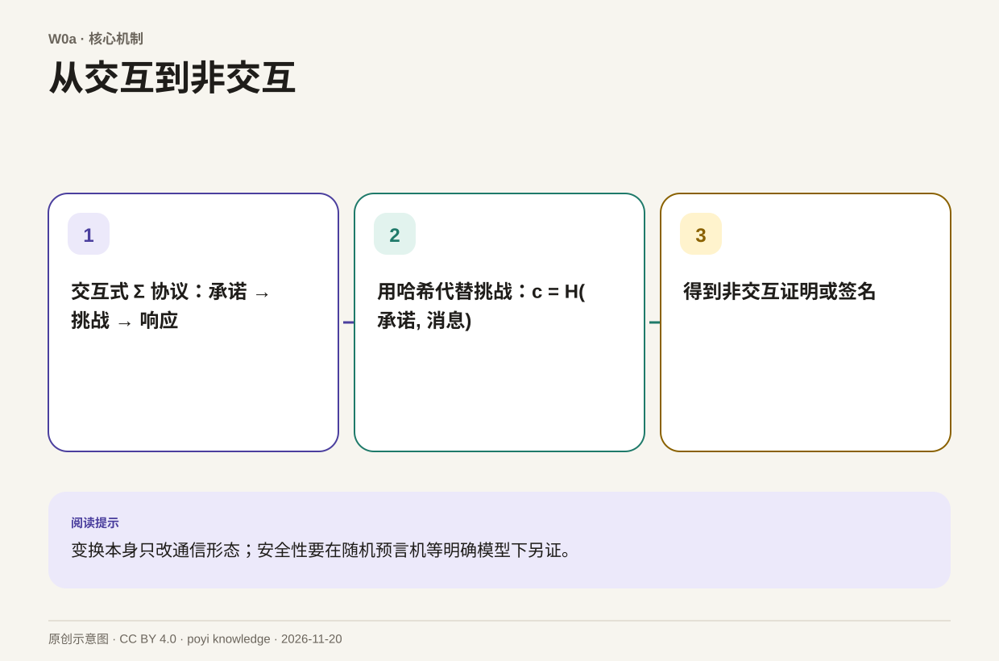
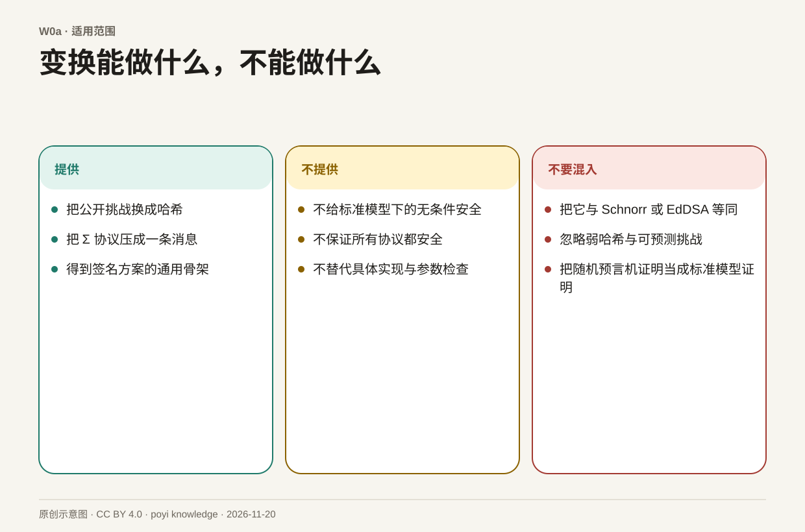

原理与机制
算法：Fiat-Shamir 启发式（Fiat-Shamir Heuristic）。Fiat–Shamir 是密码学里最常用、也最常被误用的一个转换技巧：它把一个交互式的协议，变成一个非交互式的证明或签名。**典型的 σ-协议（交互式）**长这样：
1.证明者（知道证人 w）发送一个承诺 a；
2.验证者（只知道陈述 x）随机挑一个挑战 c；
3.证明者回应 z；
4.验证者检查某个方程是否成立（例如 g^z = a · x^c）。这里的关键是：挑战 c 由验证者随机产生，所以证明者无法提前挑选一个对自己有利的 c。安全性还依赖两个性质：特殊可靠性（同一个承诺在两个不同挑战下都有回应，就能解出证人 w）和零知识性（z 不泄露 w）。Fiat–Shamir 转换：把第 2 步的随机数换成哈希。```
c = H(会话上下文 || 消息 || 承诺 a ...)
证明者自己算出 c，再回应 z；验证者事后重算 c 并检查方程。**双方不再需要通信。** 协议从「证明者与验证者轮流说话」变成「证明者一个人说完，验证者事后检查」。**它怎么变成签名？Schnorr 签名就是这套机制的原型：交互式识别协议（承诺 R = kG → 挑战 e → 回应 s = k + e·x）加上「e = H(m || R)」这一步，就是一个签名。**DSA、ECDSA、Ed25519、BIP 340 全部是它的变体**，ML-DSA 则是「Fiat–Shamir + 拒绝采样中止」的格版本。**要让这个转换站得住，五个条件缺一不可**：
1.**哈希必须被建模为随机预言机**（RO 模型）。这是最大的假设。2.**挑战必须绑定整个陈述和全部承诺**——公钥、会话标识、消息、每一个承诺都要进去，少一个就多一条攻击路径。3.**挑战的取值空间必须足够大且分布均匀**（通常 ≥ 2λ 位），否则特殊可靠性太弱。4.**承诺必须不可预测**，否则证明者可以「磨」（grind）：反复换承诺直到抽到有利的挑战——**这正是「FS with Aborts」要中止循环的原因**。5.**底层协议本身必须可靠**。FS 只能放大协议的优点，不能修复协议的缺陷。
为什么重要
没有 Fiat–Shamir，就没有今天的数字签名。
数字签名的定义要求「签名者对着消息签名，验证者事后单独验证」。但密码学能构造出来的、最好用的那批身份识别协议，全都是交互式的——Schnorr 的识别方案就是交互式的，ElGamal 也是。如果只能靠交互来完成认证，公钥密码在最需要它的地方（软件更新、证书、交易、区块）就全都用不上。Fiat–Shamir 的贡献是一次去掉交互，而且代价极小：多一次哈希调用。它是密码学里复用率最高的想法：
- 签名：Schnorr 签名 → DSA、ECDSA、Ed25519、BIP 340、ML-DSA。- 非交互式零知识证明：Schnorr 的离散对数知识证明是 NIZK 的教科书例子；Bulletproofs 一类方案也建立在它上面；区块链上验证「我知道某个秘密」的脚本，多半就是它。- 格密码：ML-DSA 的「FS with Aborts」把 Schnorr 的线性结构搬到模格上，再加拒绝采样来消除信息泄露。- 多方与阈值协议：MuSig2、FROST 都在 Schnorr 体系里，但需要额外小心（见下文）。- 可验证计算：STARK 一类系统在对 transcript 做承诺时，也大量依赖同样的「用哈希把 transcript 绑进挑战」的思路。但它的名字里带着「启发式」（heuristic）」三个字，这是历史留下的警告：Fiat 和 Shamir 1986 年那篇论文里，安全论证是错的。它的 Lemma 6 实际上隐式地用到了 9 年后才被证明工具化的 forking lemma。第一个针对 FS 化 Schnorr 签名的完整正确证明，要等到 1996 年 Pointcheval 与 Stern 的工作。这二十年的历史说明：FS 的原理极其简洁，但它的安全证明是整个领域里最需要小心的一部分。
应用与实例
- 几乎所有主流数字签名：DSA、ECDSA、Ed25519、Ed448、BIP 340 的 Schnorr 签名、ML-DSA 的格签名，本质都是 Fiat–Shamir 转换。2016 年 Fiat 与 Shamir 那篇《Security Proofs for Schnorr Signatures and the DDH Assumption》就是给这一族做统一证明的。- 非交互式零知识证明：Schnorr 的离散对数 NIZK、Bulletproofs 一类范围证明、环签名与匿名凭证协议里的挑战计算。- 格基签名：ML-DSA 用的是「FS with Aborts」——把承诺哈希成挑战之后，用拒绝采样检查响应是否泄露秘密，泄露就中止重来。- 多方签名与门限签名：比特币的 MuSig2（BIP 327）、**FROST（RFC 9591）**都在 Schnorr 体系内，但都必须额外处理「挑战碰撞」的问题。- 区块链上的可验证声明：「我知道私钥」「这是一笔授权交易」这类断言，通常就是 Schnorr NIZK 的直接实例。- 学术与教学：它是密码学课程里讲「如何把交互协议变成非交互协议」的标准例子，也是讨论「哈希函数为什么变成了安全关键基础设施」的最好案例。
边界与攻击面
Fiat–Shamir 没有被「破」，但它是密码学里被误用最多、后果最隐蔽的机制之一。以下每一条都对应过真实的安全事故或已发表的改进。
- 「弱 FS」= 可延展。如果挑战只哈希承诺而不哈希陈述（
c = H(a)而不是c = H(x || a)），整个变换就是可延展的：攻击者可以把一个签名改造成另一个合法签名。把公钥漏在挑战之外，正是 Schnorr 家族关联密钥攻击的根源，也是 BIP 340 坚持 key prefixing 的原因。规则很简单：公钥、会话标识、消息、所有承诺，一个都不能少。 - 原始 Fiat–Shamir 论文的证明是错的。1986 年那篇 STOC 论文的 Lemma 6 隐式依赖了 9 年后才出现的 forking lemma；Bellare 与 Rogaway 1993 在证明 FS 作为证明系统时，也只是断言了可靠性而没有证明。第一个完整的 FS 签名安全证明是 Pointcheval 与 Stern（EUROCRYPT 1996），它引入了 forking lemma 这个至今仍在使用的核心工具。- 多方场景下的「省略攻击」（ROS 问题）。在多签和门限协议里，攻击者可以发起大量并行的签名会话，用多项式数量的哈希查询寻找「挑战碰撞」。Drijvers 等人（EUROCRYPT 2019）系统化了这一类攻击：朴素的 FS 多签构造会被攻破。这就是 MuSig2 不得不增加一轮 nonce 交换、FROST 不得不引入绑定因子的原因。FS 在单签里成立，在多方里要重新证明。
- 量子条件下 FS 一般不安全。安全证明依赖「重绕」（rewinding）攻击者的 oracle 查询，而量子算法可以同时操作多个查询，重绕失效。Ambainis、Rosmanis 与 Unruh（FOCS 2014）证明：在量子随机预言机模型下，FS 变换一般是不安全的（至少无法相对化地证明）。补救办法有「lossy FS」、「FS with Aborts」以及 Unruh 提出的后量子变体。这也意味着所有 Schnorr 系签名在量子面前本来就不安全——Shor 已经把它们全端了。
- 它建立在「哈希是理想随机的」这个假设上，而且这个假设不可证伪。Goldwasser 与 Kalai（STOC 2007）证明：如果随机预言机不存在，Fiat–Shamir 启发式就是可被证明为不安全的。这不是学术洁癖——现实中 MD5、MD4、SHA-1 都被证明「不是随机预言机」，用它们做 FS 变换就等于踩在薄冰上。哈希函数的强度从此成了整个签名体系的承重墙。
- 挑战分布必须均匀。把哈希直接对群阶取模会产生统计偏置，多次签名后 nonce 的信息会泄露，最终可解出私钥。正确做法是拒绝采样。ML-DSA 把整个算法的安全性都压在这件事上。
- 承诺必须不可预测。如果承诺可以被预测或被证明者挑选，证明者就能「磨」出有利的挑战。「FS with Aborts」的中止循环正是为此存在：一旦发现这次承诺会泄露信息，就丢掉重来。- 挑战空间不能太小。挑战位数太少，特殊可靠性的提取概率就高，伪造变得容易。这也是 BIP 340 讨论「16 字节短挑战」时强调的：在多方签名里，短挑战的碰撞攻击是可行的，所以不能为了省 16 字节而缩短挑战。
- 哈希必须是抗碰撞的、并且做了域分隔。同一个哈希函数在不同协议、不同上下文里混用，等于让攻击者跨协议搬运签名。

历史与背景
- 1986 年：Fiat 与 Shamir 在 STOC 上发表《A Signature Scheme Based on the Difficulty of Factoring》。这个技巧第一次出现——他们用「平方」识别方案（基于分解困难性）构造了一个签名，办法就是让签名者自己用哈希算出验证者的挑战。这篇论文里的安全证明后来被发现有误。
- 1989 / 1990 年：同一作者组合发表《How to Prove Yourself: Practical Solutions to Identification and Signature Problems》（CRYPTO '89 论文集，1990 年出版），把识别方案与签名方案讲得更完整。所谓「完整版」从未发表，流传的是这篇摘要。其 Lemma 6 的证明隐式依赖了后来的 forking lemma。- 1989 / 1990 年：Claus Schnorr 用同一个技巧构造了 Schnorr 签名（《Efficient Signature Generation for Discrete Logarithm Problems》，EUROCRYPT '90）。从这一刻起，FS 与 Schnorr 绑定在一起，成了后来的 DSA、ECDSA、Ed25519、BIP 340 的共同祖先。
- 1993 年：Bellare 与 Rogaway 在随机预言机模型下分析 FS 变换（作为非交互证明系统），可靠性部分只做了断言。- 1996 年：Fiat 与 Shamir《Security Proofs for Schnorr Signatures and the DDH Assumption》（EUROCRYPT 1996）——FS 化 Schnorr 签名的第一个严格处理；Pointcheval 与 Stern 同一会议提出 forking lemma，给出第一个完整证明；van Oorschot 与 Wiener 发表 FS 范式综述。这一年是 FS 从「启发式」变成「可证明技术」的分水岭。
- 2005 年：Fischlin 提出不需要重绕的替代构造，绕开了重绕带来的紧致性损失与模拟器膨胀问题。- 2007 年：Goldwasser 与 Kalai《On the (In)security of the Fiat-Shamir Heuristic》（STOC 2007）证明：若随机预言机不存在，FS 可被证明为不安全。
- 2014 年：Ambainis、Rosmanis 与 Unruh 证明量子条件下 FS 一般不安全，并给出「FS with Aborts」（后来的 ML-DSA 正是这个家族的一员）。- 2019 年：Drijvers 等人《On the Security of Multi-signatures and MPC》（EUROCRYPT 2019）揭示 ROS 攻击，迫使多方签名方案重新设计（MuSig2、FROST）。- 2020 年代：ML-DSA 把 FS with Aborts 写入美国联邦标准；后量子时代的多签协议（基于 ML-DSA 的 MuSig 变体）正在把同一套技巧搬进格世界。
逐步示例与核验
形式模型与复算步骤
[h=H(M),\quad H:{0,1}^{*}\to{0,1}^{n}]
Fiat-Shamir 启发式的公开参数、密钥/随机数与消息；变量说明：M 任意长度消息，h 为 n 位摘要。1.消息填充到块边界。2.压缩函数逐块迭代。3.输出链值作为摘要。边界：公式只覆盖已登记的参数与假设；参数取值、标准版本和实现细节仍以来源为准。
参考出处
- Wikipedia search entry for Fiat-Shamir 启发式. https://zh.wikipedia.org/w/index.php?search=Fiat-Shamir%20%E5%90%AF%E5%8F%91%E5%BC%8F
- Handbook of Applied Cryptography (Menezes, van Oorschot, Vanstone). https://www.cacr.math.uwaterloo.ca/hac/